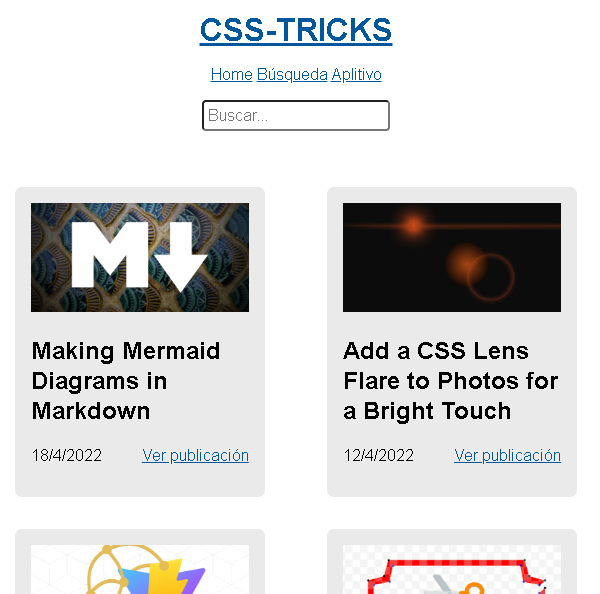
Single Page Aplication
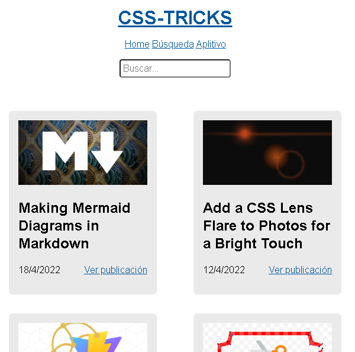
Single Page Aplication
Técnicas usadas:
Códigos html devueltos por función (con forEach) se reúnen (concatenan +=) en una variable y luego se pegan en
el DOM. No usa Template
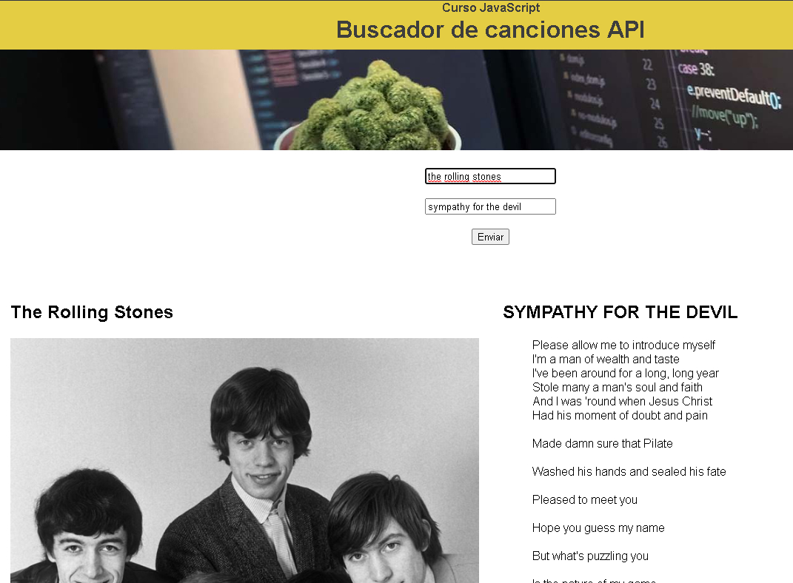
Api Canciones
Técnicas usadas:
Templates iniciados vacíos
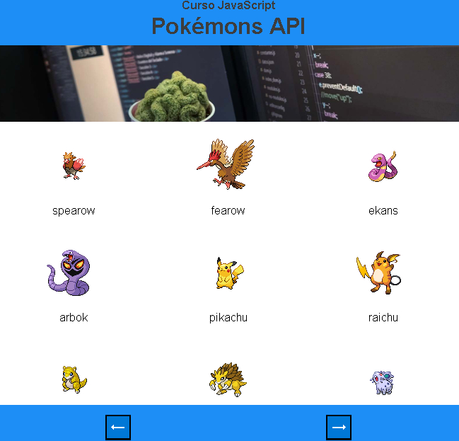
Api Pokémons
Técnicas usadas:
Templates iniciados vacíos
Botones para pasar página
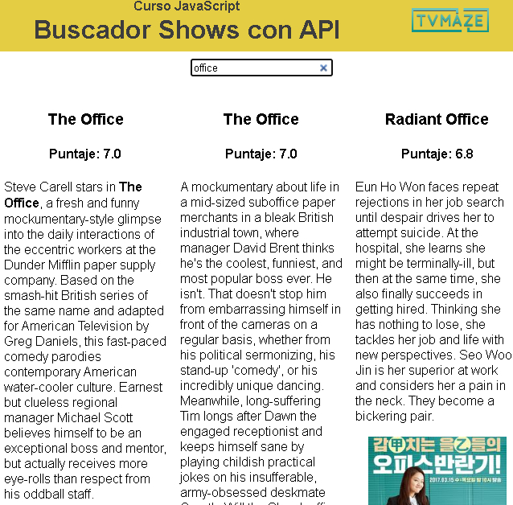
Api Programas Tv Maze
Técnicas usadas:
Template con contenido, forEach y clone. //Explicado en detalle en comentarios
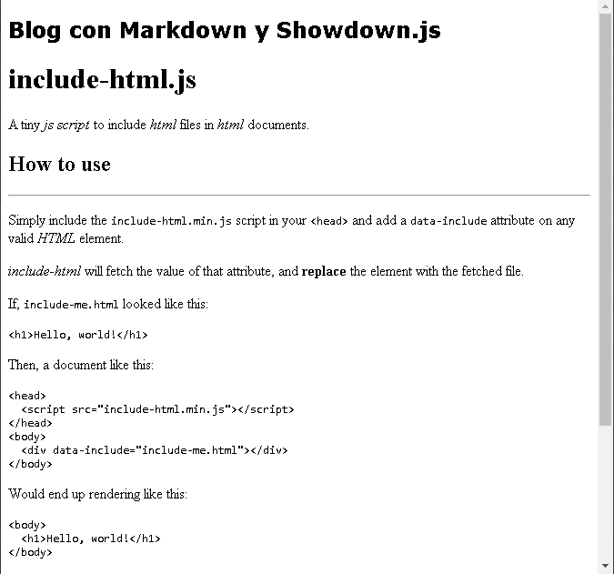
Blog con MarkDown
Técnicas usadas:
Librería Showdown via CDN
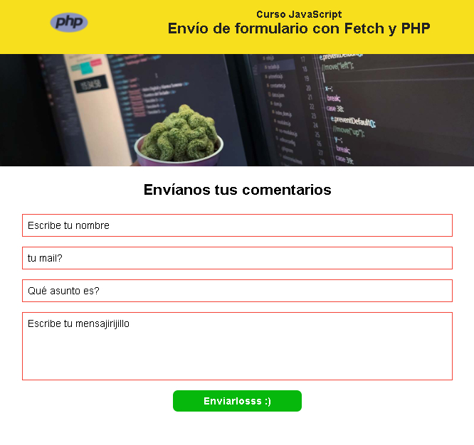
Envío de Form php
Técnicas usadas:
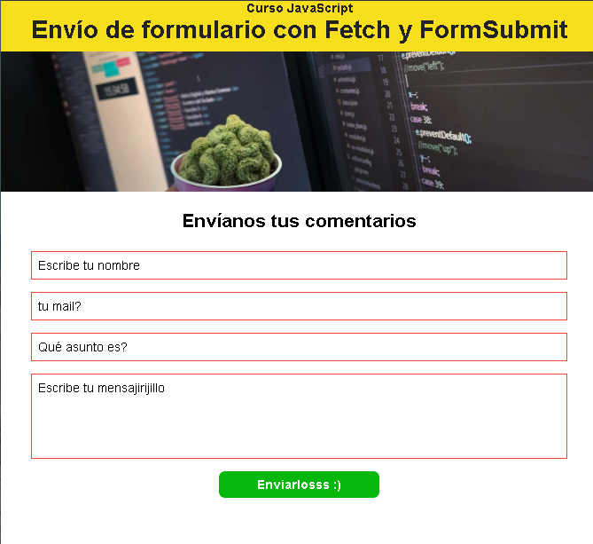
Envío de Form con FormSubmit
Técnicas usadas:
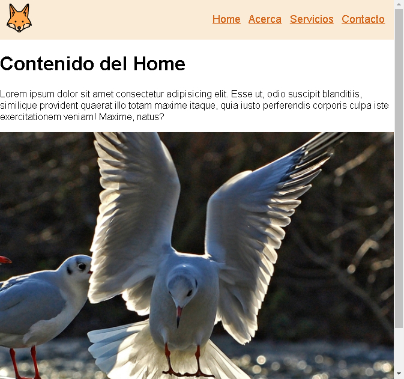
Incluir HTML cont sitio
Técnicas usadas:
Header y footer también traidos con Ajax
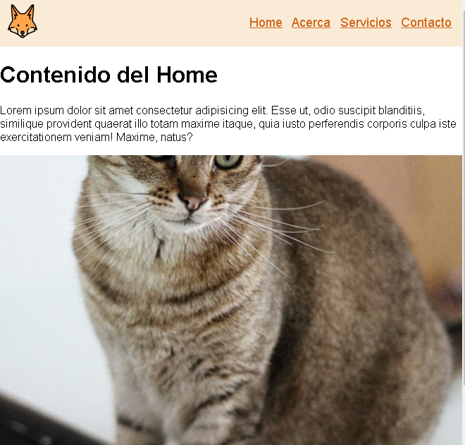
Sitio Ajax
Técnicas usadas:
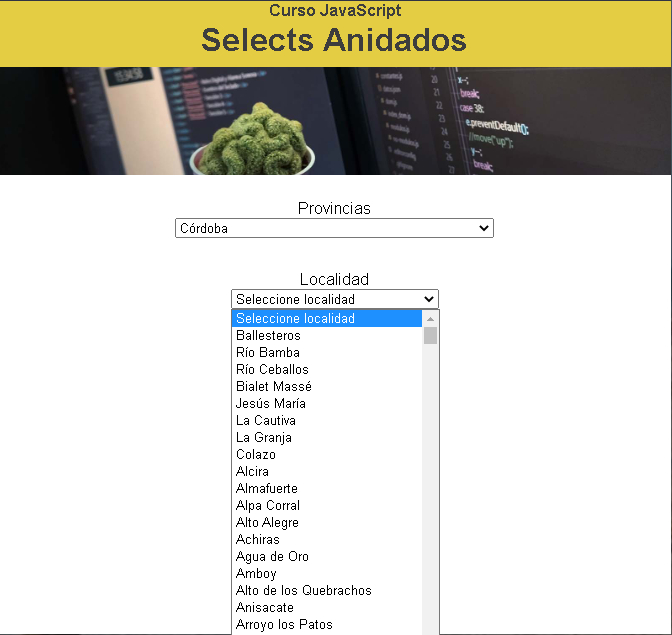
Selectores anindados
Técnicas usadas:
forEach para completar options de inputs
listener "change" para segundo selector
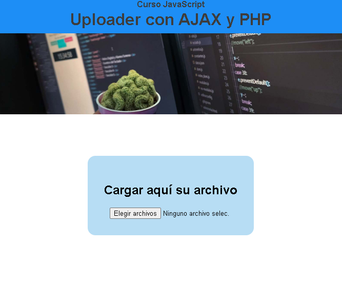
Cargador con barra progress
Técnicas usadas:
Método POST para enviar archivo
Listener "loadend" para ubicación definitiva del archivo
Listener "progress" para indicar carga
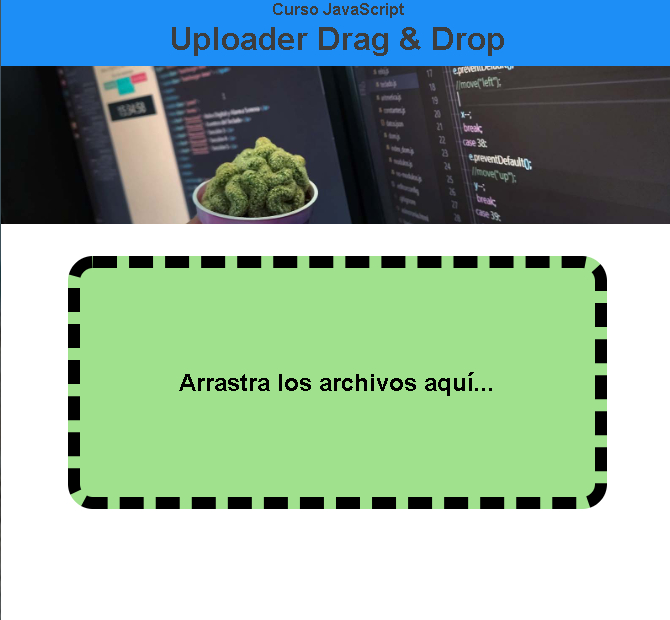
Cargador drag and drop
Técnicas usadas:
Listeners "dragover" "dragleave" y "drop" para hacer que sea arrastrable la carga.
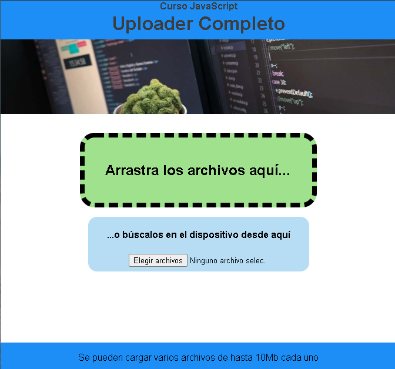
Cargador d&d y form
Técnicas usadas:
Combinación anteriores cargadores
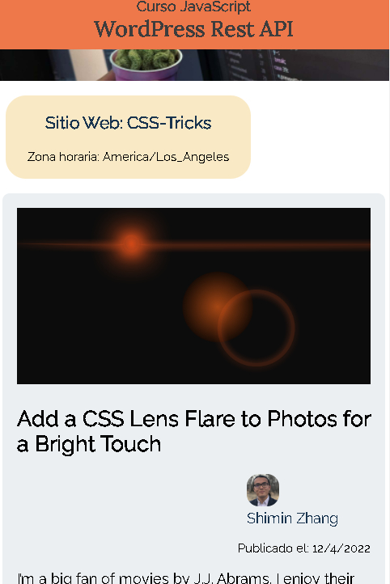
API WordPress
Técnicas usadas: